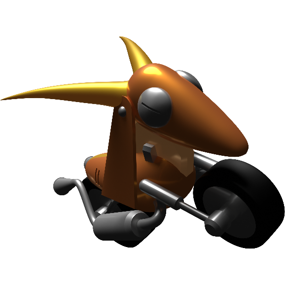
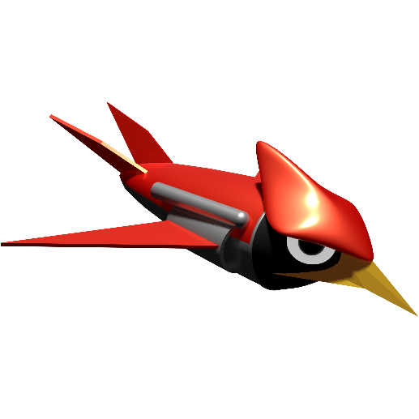
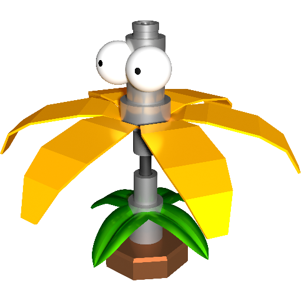

Sonic XG uses a relatively simple control scheme, as the difficulty comes from the challenges the terrain creates.
You will need to master the controls to overcome these obstacles with efficiency!
Chaos State is a unique ability that augments the character's movement in various ways.
During Chaos State, the character becomes more agile and will have an faster accelleration and handling. You will need quick reflexes to keep yourself in Chaos State! Try experimenting with what each character brings to the table!
Run fast enough for a few seconds to break the sound barrier.
You will be invulnerable during the initial burst!
Double tap the opposite direction when skidding during a Chaos Dash.
Useful for quickly evading oncoming attacks if you have quick reflexes but slows you down if used repeatedly!
Sonic is the all-rounder of the trio, he's able to move around terrain with no additional strenghts or weaknesses.
After a jump, press the ACTION button again to generate a shield around Sonic for a split second. This allows Sonic to attack enemies from further away as well as deflect projectiles and parry off of spikes!
When jumping towards a wall, press the ACTION button to start sliding down the wall. Press the ACTION button again to jump off the wall in the opposite direction. Chain multiple wall jumps together to access higher parts of levels!
During a Wall Slide, press DOWN to start rolling down the wall. Useful for getting sliding under circular ceilings.
Once designed as a commercial motorcycle, after fierce rejection, Dr. Eggman retooled this machine into a headbutting badnik with tires able to scale any terrain.
If it notices you, be ready to avoid its speedy assault!


Keep your head down, as these swooping badniks can plummet down to attack! Though simple, they can pack a mean punch.
A simple spin-attack usually does the trick to destroy this badnik.
Be careful walking through the flowers, as Dr. Eggman's upgraded Bloominator is just as effectively destructive.
A well timed Insta-Shield can deflect its energy bullets, and it only takes a single hit to break apart.

Final Fall Zone is a dangerous trek! You will need to tread carefully (but still swiftly!) across the floating terrain. On your way, you might find some of this advice useful!

SWIVELBARS require precision and quick reaction time! The longer you stay on them, the more you'll slow down, so find a rhythm.
Don't just speed by everything because it's Time Attack! There are plenty of rewarding shortcuts hidden in various places. The more you learn the layout, the better you'll find optimal routes for better times!
Due to the unstable gravity, Sonic can sometimes detatch from surfaces or get knocked backwards when in tubes! This is most definitely not a Harmony Framework bug that could not be fixed lol
{kind=link}
{kind=link}
{kind=link}